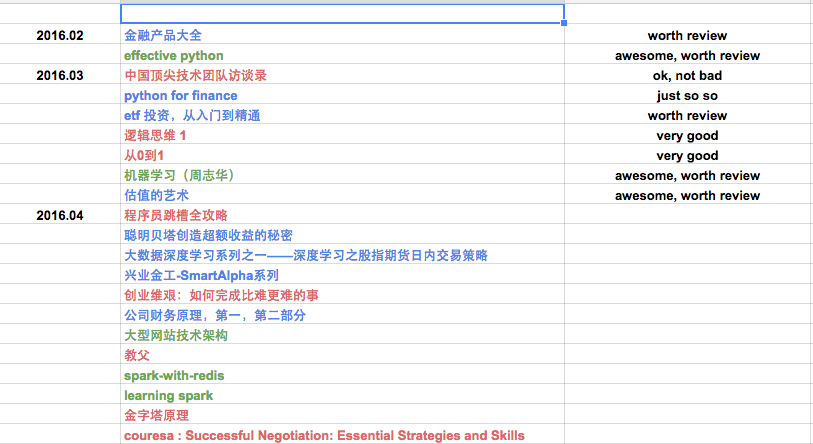

『 读书笔记 』4月读书总结和推荐
2016-04-15
写在前面
计划是每月读 5-10 本书，书籍类型大概是三个方面的：金融，技术，管理。之所以选择这三个方面，一方面是因为自己对这三个方面都很有兴趣，其次是被 linkedin 创始人 Hoffman 的 ABZ 理论 深度影响。建议大家都看看 abz 理论那篇文章，如果我有空，也会整理一些常用的这类理论模型到博客里的。
月底读书总结的形式都很简单，只是简单的一个列表和简单的书评，对觉得比较好的书会有单独的读书笔记。另外推荐大家用 excel 来做一些简单的工作管理，我现在就用 google docs 来做工作安排和读书计划，个人感觉比一些常用的神马协同软件强大太多了，简单，够用，就行了。工作中见过太多人把时间都花到使用那些协同软件上去，不得不说避重就轻了，适得其反，哈哈。
下面是一张我用 google docs 来做读书安排的截图，不同颜色代表不同类别的数据，清晰明了实用。

本月看了 7 本书，其中的电子书链接都放到亲爱的度娘云里了，个人觉得不错的书都是纸板的，不知道有没有电子版的，推荐好书都看纸版的。
ps: 我对好书的定义很简单：
- 给自己有所启发的
- 高质量的，专业的教程类书籍
- 后期会再度回首的书
- 看完后会打算赠送给盆友看的书
- 留着给儿子看的书 [好吧，目前我只有个宝贝侄儿，哈哈]
- 最后一条，印刷质量要好
1. Learning Spark
这是 spark 几个作者一起写的第一本系统性介绍 spark 的书籍，质量非常高，内容非常赞，强烈推荐对 spark 感兴趣的人读，及时在 spark 方面有很多经验的高手也可以看看。我个人非常喜欢这本书，我自己是在 safaribooksonline 上看的，体验非常好。虽然这本书出版时间较久，2015年初出版的，里面肯定会介绍不到 spark 之后的一些特性，但是我依然强烈推荐。只要多读几遍这本书，把里面的知识点都掌握好了，对 spark 后来的特性掌握完全不是问题。
总结：这是我读过的最好的技术书籍之一。
推荐指数：* * * * *
2. 程序员跳槽全攻略
哈哈，这本书不知道是在哪个地方看到的。当时觉得很惊奇，难道连跳槽都还要有攻略？说实话，现在已经想不起来这本书讲了什么了。或许对我来说没什么用吧，我一直觉得找工作，换工作这类事都是一个水到渠成的问题。只要你真的准备好了，一切都有可能。就跟做项目管理一样，有的人一心想怎么提高员工的积极性，一心去找什么协同软件，项目软件来管理项目，我觉得这却是本末倒置了。时间要花在刀刃上，问题不要治标不治本。就项目管理这个事来说，我强烈推荐 西蒙·斯涅克 的这个 TED talk：Start with why – how great leaders inspire action。
总结：如果你希望看攻略来获得 自我提升，完全没必要看这本书；不过也可以花些闲暇时光来读这本书，不要带有任何目的性。
推荐指数：* *
3.
总结：
推荐指数：*
3.
总结：
推荐指数：*
3.
总结：
推荐指数：*
3.
总结：
推荐指数：*